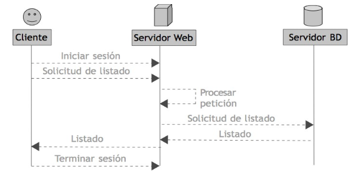
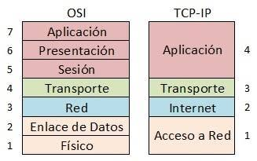

Característiques, funcionament, arquitectura i bastionat per a administradors de sistemes Características, funcionamiento, arquitectura y bastionado para administradores de sistemas
Implantació d'Aplicacions Web (IAW) — Cicle Formatiu de Grau Superior d'Administració de Sistemes Informàtics en Xarxa (ASIR) Implantación de Aplicaciones Web (IAW) — Ciclo Formativo de Grado Superior de Administración de Sistemas Informáticos en Red (ASIR)
En l'actualitat, l'ecosistema del programari es divideix principalment segons on s'executa el codi i on resideixen les dades: En la actualidad, el ecosistema del software se divide principalmente según dónde se ejecuta el código y dónde residen los datos:
S'executen directament sobre el sistema operatiu del dispositiu (compilades o interpretades localment). No requereixen obligatòriament connexió a la xarxa per a funcionar (per exemple, un editor gràfic com GIMP, entorns com VS Code o reproductors multimèdia locals). Se ejecutan directamente sobre el sistema operativo del dispositivo (compiladas o interpretadas localmente). No requieren obligatoriamente conexión a la red para funcionar (por ejemplo, un editor gráfico como GIMP, entornos como VS Code o reproductores multimedia locales).
Subtipus principal del model client-servidor on la interfície s'executa de manera nativa dins d'un navegador web mitjançant tecnologies estàndard (HTML5, CSS3, JavaScript/WebAssembly), sense requerir cap paquet d'instal·lació prèvia en el sistema amfitrió. Subtipo principal del modelo cliente-servidor donde la interfaz se ejecuta de forma nativa dentro de un navegador web mediante tecnologías estándar (HTML5, CSS3, JavaScript/WebAssembly), sin requerir ningún paquete de instalación previa en el sistema anfitrión.
Descentralitzades, on els equips connectats tenen un rang equivalent i comparteixen recursos simultàniament actuant tant de clients com de servidors (ex: BitTorrent, IPFS). Descentralizadas, donde los equipos conectados tienen un rango equivalente y comparten recursos simultáneamente actuando tanto de clientes como de servidores (ej: BitTorrent, IPFS).
Combinen la portabilitat web amb funcionalitats natives del dispositiu mòbil o escriptori (notificacions push, càmera, accés fora de línia mitjançant Service Workers i magatzems locals). Combinan la portabilidad web con funcionalidades nativas del dispositivo móvil o escritorio (notificaciones push, cámara, acceso offline mediante Service Workers y almacenamiento local).
El funcionament troncal respon a un cicle estandarditzat de petició i resposta (request-response cycle): El funcionamiento troncal responde a un ciclo estandarizado de petición y respuesta (request-response cycle):
sequenceDiagram
autonumber
actor Client as Navegador (Client / Cliente)
participant DNS as Servidor DNS
participant Proxy as Proxy Invers / Reverse Proxy (Nginx)
participant Backend as Backend Runtime (PHP-FPM / Node)
participant DB as Base de Dades / Datos (MariaDB)
Client->>DNS: Consulta resolució de domini (ex. www.exemple.com)
DNS-->>Client: Retorna IP pública del servidor
Client->>Proxy: Negociació TLS 1.3 + Petició HTTPS GET /recurs
Proxy->>Backend: Canalitza per socket FastCGI o proxy intern
Backend->>DB: Executa consulta SQL (SELECT / INSERT)
DB-->>Backend: Retorna conjunt de dades
Backend-->>Proxy: Construeix resposta (HTML / JSON)
Proxy-->>Client: Resposta HTTP 200 OK + Capçaleres de seguretat
Client->>Client: Renderitza DOM, CSS i executa JavaScript
Traça tècnica d'una petició web des de la introducció de la URL fins al renderitzat final.
Traza técnica de una petición web desde la introducción de la URL hasta el renderizado final.
El mateix servidor assumeix la capa web i la capa de dades (per exemple, fitxers plans o SQLite). Útil per a entorns mínims, però no escalable. El mismo servidor asume la capa web y la capa de datos (por ejemplo, ficheros planos o SQLite). Útil para entornos mínimos, pero no escalable.
L'aplicació es divideix en contenidors aïllats orquestrats amb Docker Compose o Kubernetes: proxy invers, contenidor d'aplicació, servidor de base de dades i memòria cau Redis. La aplicación se divide en contenedores aislados orquestados con Docker Compose o Kubernetes: proxy inverso, contenedor de aplicación, servidor de base de datos y memoria caché Redis.

Figura 1: Arquitectura clàssica en 3 nivells (Presentació, Aplicació i Dades). Figura 1: Arquitectura clásica en 3 niveles (Presentación, Aplicación y Datos).En el desenvolupament actual és pràctica estàndard separar estrictament les responsabilitats: En el desarrollo actual es práctica estándar separar estrictamente las responsabilidades:
Construït amb frameworks moderns (Vue, React, Angular). S'allotja com a fitxers estàtics servits de forma immediata per Nginx o una CDN i s'executa íntegrament en el navegador del client. Construido con frameworks modernos (Vue, React, Angular). Se aloja como archivos estáticos servidos de forma inmediata por Nginx o una CDN y se ejecuta íntegramente en el navegador del cliente.
El servidor no construeix ni envia etiquetes HTML, sinó dades en brut mitjançant format JSON: El servidor no construye ni envía etiquetas HTML, sino datos en bruto mediante formato JSON:
{
"status": "success",
"data": { "usuari": "asir2", "rol": "administrador" }
}La URL constitueix l'identificador estàndard per a localitzar recursos en la xarxa: La URL constituye el identificador estándar para localizar recursos en la red:
| Component Componente | Fragment d'exemple Fragmento de ejemplo | Funció i descripció Función y descripción |
|---|---|---|
| Esquema / ProtocolEsquema / Protocolo | https:// |
Indica el protocol de transferència (habitualment https:// o http://).Indica el protocolo de transferencia (habitualmente https:// o http://). |
| Nom de domini o HostNombre de dominio o Host | www.exemple.com |
Nom resolt pel servei DNS cap a l'adreça IP del servidor amfitrió.Nombre resuelto por el servicio DNS hacia la dirección IP del servidor anfitrión. |
| Port de xarxaPuerto de red | :443 |
Port d'escolta del servei (80 per defecte en HTTP, 443 en HTTPS).Puerto de escucha del servicio (80 por defecto en HTTP, 443 en HTTPS). |
| Ruta (Path)Ruta (Path) | /botiga/productes |
Camí jeràrquic cap a l'arxiu o punt d'entrada lògic (endpoint) del servidor.Camino jerárquico hacia el archivo o punto de entrada lógico (endpoint) del servidor. |
| Query String | ?categoria=hardware&ordre=asc |
Paràmetres clau-valor per a filtrar o enviar variables al servidor, units per &.Parámetros clave-valor para filtrar o enviar variables al servidor, unidos por &. |
| Àncora / FragmentÁncora / Fragmento | #especificacions |
Referència interna gestionada només pel navegador per a situar la vista. No s'envia mai al servidor. Referencia interna gestionada solo por el navegador para situar la vista. No se envía nunca al servidor. |
try_files $uri $uri/ /index.php?$args; en Nginx) per a amagar l'extensió dels fitxers i encaminar tot el trànsit cap a un únic punt d'entrada central (patró Front Controller).
Los servidores web modernos emplean reglas de reescritura (como try_files $uri $uri/ /index.php?$args; en Nginx) para ocultar la extensión de los archivos y encaminar todo el tráfico hacia un único punto de entrada central (patrón Front Controller).
Estructura el contingut semàntic del document web (elements de bloc, text, formularis i elements multimèdia). Estructura el contenido semántico del documento web (elementos de bloque, texto, formularios y elementos multimedia).
Gestiona la presentació estètica, posicionament visual i disseny responsiu (Media Queries, Flexbox, CSS Grid). Gestiona la presentación estética, posicionamiento visual y diseño adaptativo (Media Queries, Flexbox, CSS Grid).
Aporta dinamisme, gestió d'esdeveniments interactius i comunicació asíncrona en segon pla (Fetch API / AJAX). Aporta dinamismo, gestión de eventos interactivos y comunicación asíncrona en segundo plano (Fetch API / AJAX).
Format binari que permet executar codi compilat d'alt rendiment (C, Rust, Go) dins del navegador a velocitats quasi natives. Formato binario que permite ejecutar código compilado de alto rendimiento (C, Rust, Go) dentro del navegador a velocidades casi nativas.
S'executa al costat del servidor gestionant transaccions de dades, autenticació, validació d'usuaris i connectivitat amb magatzems SQL/NoSQL: Se ejecuta en el lado del servidor gestionando transacciones de datos, autenticación, validación de usuarios y conectividad con almacenes SQL/NoSQL:
| Servidor WebServidor Web | Model d'ArquitecturaModelo de Arquitectura | Punt FortPunto Fuerte | Cas d'Ús RecomanatCaso de Uso Recomendado |
|---|---|---|---|
| Nginx | Orientada a esdeveniments (Asíncron)Orientada a eventos (Asíncrono) | Molt baix consum de RAM i gran rendiment amb fitxers estàtics i com a Reverse Proxy.Muy bajo consumo de RAM y gran rendimiento con ficheros estáticos y como Reverse Proxy. | Frontals d'alta concurrència, balancejadors i integració amb PHP-FPM.Frontales de alta concurrencia, balanceadores e integración con PHP-FPM. |
| Apache (httpd) | Multiprocessament (Prefork, Worker, Event MPM)Multiprocesamiento (Prefork, Worker, Event MPM) | Gran ecosistema de mòduls i configuració descentralitzada mitjançant fitxers .htaccess.Gran ecosistema de módulos y configuración descentralizada mediante archivos .htaccess. |
Allotjament compartit (Shared Hosting) i entorns acadèmics clàssics (LAMP).Alojamiento compartido (Shared Hosting) y entornos académicos clásicos (LAMP). |
| Caddy | Escrit en Go, multithread natiuEscrito en Go, multihilo nativo | Configuració ultra-senzilla i gestió 100% automatitzada de certificats HTTPS (Let's Encrypt).Configuración ultra-sencilla y gestión 100% automatizada de certificados HTTPS (Let's Encrypt). | Desplegaments ràpids, microserveis i entorns de desenvolupament moderns.Despliegues rápidos, microservicios y entornos de desarrollo modernos. |
server {
listen 80;
server_name iaw.local;
root /var/www/iaw;
index index.php index.html;
location / {
try_files $uri $uri/ /index.php?$args;
}
location ~ \.php$ {
include snippets/fastcgi-php.conf;
fastcgi_pass unix:/run/php/php8.2-fpm.sock;
}
}| Avantatges Ventajas | Inconvenients Inconvenientes |
|---|---|
| Sense desplegament al client:Sin despliegue en cliente: Només requereix un navegador; s'elimina la complexitat d'instal·lar paquets individuals en milers de llocs de treball. Solo requiere un navegador; se elimina la complejidad de instalar paquetes individuales en miles de puestos de trabajo. | Dependència de la xarxa:Dependencia de la red: La disponibilitat del servei requereix una connexió estable, llevat de components parcials en aplicacions amb estratègies PWA. La disponibilidad del servicio requiere una conexión estable, salvo componentes parciales en aplicaciones con estrategias PWA. |
| Manteniment centralitzat:Mantenimiento centralizado: Els canvis o pedaços de seguretat s'apliquen al servidor i impacten immediatament sobre tots els clients. Los cambios o parches de seguridad se aplican en el servidor e impactan inmediatamente sobre todos los clientes. | Latència de comunicació:Latencia de comunicación: Cada petició depèn de la velocitat i temps d'anada i tornada (round-trip time) entre client i servidor. Cada petición depende de la velocidad y tiempo de ida y vuelta (round-trip time) entre cliente y servidor. |
| Portabilitat multiplataforma:Portabilidad multiplataforma: Funcionament homogeni en Linux, Windows, macOS, Android i iOS sota estàndards comuns del W3C. Funcionamiento homogéneo en Linux, Windows, macOS, Android e iOS bajo estándares comunes del W3C. | Consum en còmput crític:Consumo en cómputo crítico: Tot i WebAssembly, les aplicacions d'escriptori natives mantenen un accés més directe a instruccions de baix nivell i GPU. A pesar de WebAssembly, las aplicaciones nativas de escritorio mantienen un acceso más directo a instrucciones de bajo nivel y GPU. |
| Escalabilitat des de la infraestructura:Escalabilidad de infraestructura: Possibilitat d'escalat vertical o horitzontal darrere de balancejadors de càrrega segons demanda. Posibilidad de escalado vertical u horizontal detrás de balanceadores de carga según la demanda. | Exposició a riscos de ciberseguretat:Exposición a ciberseguridad: En romandre exposades públicament, són diana directa d'atacs comuns (OWASP Top 10, bots automatitzats, DoS). Al permanecer expuestas públicamente, son diana directa de ataques comunes (OWASP Top 10, bots automatizados, DoS). |
Estandarditzà connexions persistents (Keep-Alive), però pateix de bloqueig en cap de línia (Head-of-Line Blocking) a nivell d'aplicació. Estandarizó conexiones persistentes (Keep-Alive), pero sufre de bloqueo en cabeza de línea (Head-of-Line Blocking) a nivel de aplicación.
Format binari amb multiplexació completa (múltiples fluxos simultanis sobre una sola connexió TCP) i compressió de capçaleres mitjançant HPACK. Formato binario con multiplexación completa (múltiples flujos simultáneos sobre una sola conexión TCP) y compresión de cabeceras mediante HPACK.
Substitueix TCP pel protocol QUIC sobre UDP, eliminant el bloqueig de transport per pèrdua de paquets i permetent negociacions 0-RTT. Sustituye TCP por el protocolo QUIC sobre UDP, eliminando el bloqueo de transporte por pérdida de paquetes y permitiendo negociaciones 0-RTT.
Petició rebuda; continuant procés (ex: 101 Switching Protocols en WebSockets).
Petición recibida; continuando proceso (ej: 101 Switching Protocols en WebSockets).
Acció rebuda, entesa i acceptada amb èxit (ex: 200 OK, 201 Created).
Acción recibida, entendida y aceptada con éxito (ej: 200 OK, 201 Created).
Cal acció addicional del client (ex: 301 Moved Permanently, 304 Not Modified).
Requiere acción adicional del cliente (ej: 301 Moved Permanently, 304 Not Modified).
Error del client (403, 404) o fallada interna del servidor (500, 502 Bad Gateway).
Error del cliente (403, 404) o fallo interno del servidor (500, 502 Bad Gateway).
Canal HTTP protegit mitjançant la capa TLS (Transport Layer Security). Constitueix el requisit base imprescindible per a qualsevol desplegament en producció: Canal HTTP protegido mediante la capa TLS (Transport Layer Security). Constituye el requisito base imprescindible para cualquier despliegue en producción:

Figura 2: Xifratge i canal segur punt a punt amb HTTPS / TLS. Figura 2: Cifrado y canal seguro punto a punto con HTTPS / TLS.Tot administrador de sistemes ha de configurar al servidor web les següents capçaleres de seguretat HTTP per a protegir els clients d'atacs comuns (OWASP): Todo administrador de sistemas debe configurar en el servidor web las siguientes cabeceras de seguridad HTTP para proteger a los clientes de ataques comunes (OWASP):
| Capçalera HTTPCabecera HTTP | Valor típic de configuracióValor típico de configuración | Amenaça que mitigaAmenaza que mitiga |
|---|---|---|
| Strict-Transport-Security | max-age=31536000; includeSubDomains |
Força connexions HTTPS i prevé atacs de degradació SSL Stripping (HSTS).Fuerza conexiones HTTPS y previene ataques de degradación SSL Stripping (HSTS). |
| X-Frame-Options | SAMEORIGIN o DENY |
Evita que la web siga incrustada en iframes aliens (atacs de Clickjacking).Evita que la web sea incrustada en iframes ajenos (ataques de Clickjacking). |
| X-Content-Type-Options | nosniff |
Força el navegador a respectar el MIME Type i prevé atacs de confusió de tipus.Fuerza al navegador a respetar el MIME Type y previene ataques de confusión de tipos. |
| Content-Security-Policy | default-src 'self'; script-src 'self' ... |
Restringeix orígens autoritzats d'scripts evitant atacs XSS (Cross-Site Scripting).Restringe orígenes autorizados de scripts evitando ataques XSS (Cross-Site Scripting). |
El patró de disseny per excel·lència per a estructurar una aplicació web garantint la separació de responsabilitats és el model MVC: El patrón de diseño por excelencia para estructurar una aplicación web garantizando la separación de responsabilidades es el modelo MVC:
flowchart LR
User([Usuari / Client / Cliente]) -->|1. Petició / Petición HTTP| C[Controlador / Controller]
C -->|2. Consulta / Modifica dades| M[(Model / Modelo)]
M -->|3. Retorna dades / datos| C
C -->|4. Selecciona i envia dades| V[Vista / View]
V -->|5. Renderitza resposta / Renderiza respuesta| User
Flux de dades i aïllament de capes en una arquitectura MVC.
Flujo de datos y aislamiento de capas en una arquitectura MVC.
Encapsula les regles de negoci i la lògica de dades. Gestiona les operacions CRUD sobre la base de dades sense dependència de com es presentaran. Encapsula las reglas de negocio y la lógica de datos. Gestiona las operaciones CRUD sobre la base de datos sin dependencia de cómo se presentarán.
Intercepta la petició de l'usuari, valida entrades, sol·licita informació al Model corresponent i selecciona la Vista adequada per a remetre la resposta. Intercepta la petición del usuario, valida entradas, solicita información al Modelo correspondiente y selecciona la Vista adecuada para remitir la respuesta.
S'encarrega exclusivament de la capa de presentació. Produeix el document HTML o estructura el paquet de dades JSON que rebrà el client. Se encarga exclusivamente de la capa de presentación. Produce el documento HTML o estructura el paquete de datos JSON que recibirá el cliente.
| Component MVC Componente MVC | Funció en l'aplicació Función en la aplicación | Impacte en l'administració de sistemes (ASIR) Impacto en la administración de sistemas (ASIR) |
|---|---|---|
| Model / Modelo | Connexió a la base de dades i lògica de dades.Conexión a la base de datos y lógica de datos. | Optimitza l'escalabilitat del clúster de base de dades (rèpliques de lectura, memòria cau Redis).Optimiza la escalabilidad del clúster de base de datos (réplicas de lectura, memoria caché Redis). |
| Controlador / Controller | Enrutament i gestió de peticions HTTP.Enrutamiento y gestión de peticiones HTTP. | Afecta al consum de CPU/RAM del runtime (PHP-FPM, Node.js) i a la configuració del servidor web.Afecta al consumo de CPU/RAM del runtime (PHP-FPM, Node.js) y a la configuración del servidor web. |
| Vista / View | Generació de sortida (HTML, CSS o JSON).Generación de salida (HTML, CSS o JSON). | Optimització de la memòria cau HTTP, compressió Gzip/Brotli i integració amb CDN.Optimización de la memoria caché HTTP, compresión Gzip/Brotli e integración con CDN. |
Comprova la teua comprensió dels conceptes fonamentals abans de passar al test autocorregible: Comprueba tu comprensión de los conceptos fundamentales antes de pasar al test autocorregible:
session al servidor o tokens criptogràfics com JWT (JSON Web Tokens).
Significa que cada petición HTTP es independiente y el servidor no recuerda por sí mismo quién hace la petición entre conexiones sucesivas. Se soluciona mediante mecanismos de persistencia como Cookies de sesión, almacenes de session en servidor o tokens criptográficos como JWT (JSON Web Tokens).
Comprova la teua nota en temps real amb el qüestionari autocorregible del tema. Comprueba tu nota en tiempo real con el cuestionario autocorregible del tema.
Realitzar Autoavaluació Tema 1 Realizar Autoevaluación Tema 1